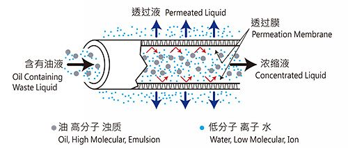
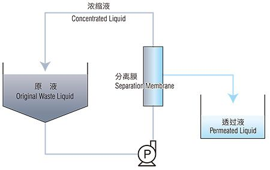
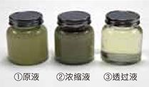
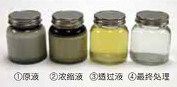
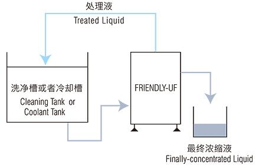
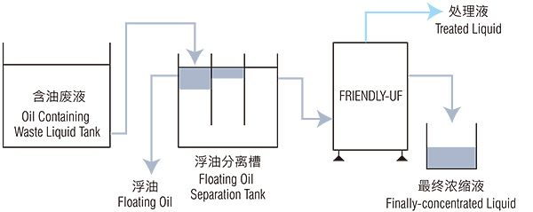

FRIENDLY UF水溶性含油廢液膜處理裝置
設備介紹
近幾年，在機械加工等各種各樣的現場從安全性・冷卻效果・作業環境的改善考慮而使用水溶性油劑。
這些水溶性油劑通常用水稀釋5～10倍的程度，據說現在使用的加工油劑90%是水溶性油劑。但是，使用後的含油廢液處理難度高，現狀是其中大半直接變為工業廢物，在其燃燒處理時會排出大量的二氧化碳。
FRIENDLY-UF采用其獨自的分離膜技術，使水溶性含油廢液有效地濃縮分離從而達到大幅度的減量減容，為「環境保護」「降低成本」提供支援。
資料來源：COSMO TECH（cosmotech-jp）
大幅度減少廢液的排出量
特長
- 不使用吸附劑・凝聚劑等，使乳化的油分能有效地濃縮分離。（99％除去）
- 廢液量能濃縮減容到１／１０～１／２０。 ※根據廢液的種類・濃度而不同。
- 因廢液的濃縮分離大幅度減少了工業廢物的處理費用。
- 干淨的透過液可以回收再利用，即經濟又環保。
- 分離膜可以清洗，因此能長期使用。
- 進行了特殊分離膜處理，因此不會產生淤渣。
- 全自動運轉，任何人都可以簡單操作。
分離膜的原理
采用獨自的分離膜技術使油廢液有效分離
讓含油廢液通過緊貼在多孔纖維內部的分離膜，只讓水（包括低分子・離子）透過，和油分（包括高分子・混濁物）分離。分離膜內變為高湍流狀態，維持高效透過率的同時不堵塞網眼可以進行安定的處理。另外，通過海綿球定期進行自動洗淨，或者根據情況用藥品洗淨，使分離膜經常保持干淨的狀態。此分離膜具有耐熱性・耐藥性的優點，適用於多種多樣的用途。

系統流程圖

洗淨廢液

切削廢液

1. 原液
2. 濃縮液
3. 透過液
4. 最終處理
原液通過分離膜只有水（包括低分子・離子）透過，濃縮液再次返回到原液槽。
通過連續循環原液只讓透過液透過，原液濃縮減容到1/10～1/20。 ※
隨著透過液的排出原液槽的水位降低，直到到達目標水位時運轉結束。
※ 根據廢液的種類・濃度而不同。
設置例
容易選擇安放場地，根據使用目的能進行最適宜的處理。
連續處理

分批處理

再利用或者通過最終處理（FRIENDLY※或者機油淨化槽）排放到下水道。
※ FRIENDLY・・・減壓蒸餾方式的水溶性處理裝置
用途
對在各種各樣的加工成形過程中排出的廢液可有效進行處理。
洗淨廢液・切削廢液・研磨廢液・壓縮機排放廢液・洗車廢液・鑄造廢液・高頻率冷卻液廢水・壓延冷卻液廢水等
規格一覽
| 機型 | FRIENDLY-UF |
|---|---|
| 膜面積 | 0.65m2（長750mm） |
| 重量 | 80kg（無水時） |
| 電源／容量 | 三相200V / 1.5KW |
| 運轉壓力／流量 | 0.5~0.6MPa / 20~30L/min |
| 處理能力 | 15L/h ~ 25L/h |
| 耐熱 | 60℃ |
| 主機尺寸（W×D×H） | 730 x 995 x 1617 mm |
| 外部輸入 | 裝置停止信號 |
| 外部輸出 | 統一異常表示 原液供給信號 濃縮液排出中信號 |
左右滑動查看完整表格
系列規格
| 機型 | FRIENDLY-UF 系列 | |||||
|---|---|---|---|---|---|---|
| 膜面積(m2) | 0.9 | 1.8 | 2.7 | 3.6 | 4.5 | 5.4 |
| 重量(無水時)(Kg) | 180 | 220 | 280 | 320 | 380 | 420 |
| 電源／電壓 | 三相 200Ｖ 50／60Hz | |||||
| 電容量 (KW) | 3.5 | 3.5 | 4.5 | 4.5 | 8.0 | 8.0 |
| 運轉壓力 (MPa) | 0.5～0.7 | 0.5～0.7 | 0.5～0.7 | 0.5～0.7 | 0.5～0.7 | 0.5～0.7 |
| 流量 (L/min) | 20～30 | 40～60 | 60～90 | 80～120 | 100～150 | 120～180 |
| 處理能力(L/h) | 25 | 50 | 75 | 100 | 125 | 150 |
| 耐熱(℃) | 60 | 60 | 60 | 60 | 60 | 60 |
左右滑動查看完整表格
其他代理機型


想評估廢液減量？先告訴我們目前的廢液狀況
- 每月廢液量大約多少？
- 廢液種類：切削液、清洗廢水、電鍍廢液或其他？
提供目前的廢液種類、產生量與處理方式，圓華團隊會協助評估適合的設備與導入方式。
圓華油品股份有限公司
- Tel
- 04-2335-5559
- Fax
- 04-2335-8886
- Hours
- 週一至週五 08:00 – 17:00